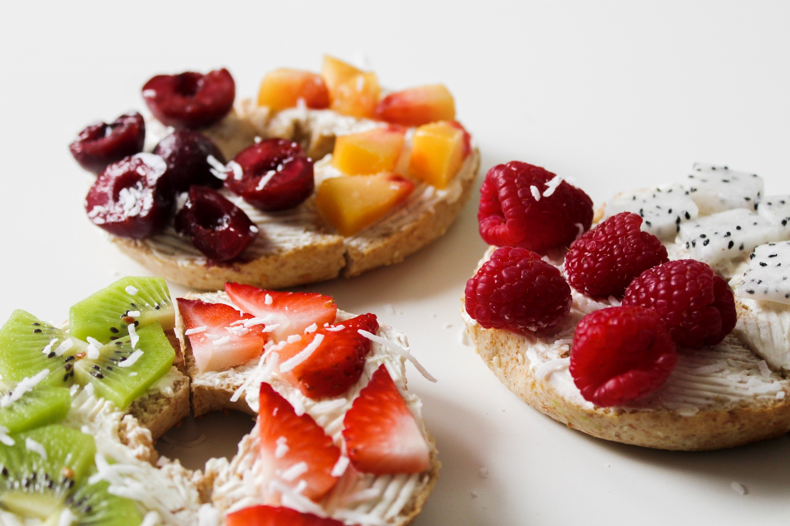
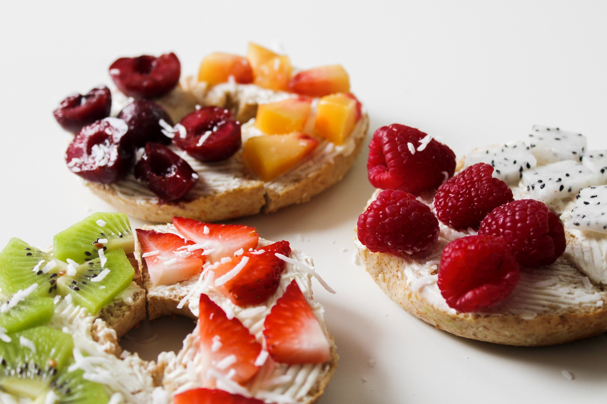
 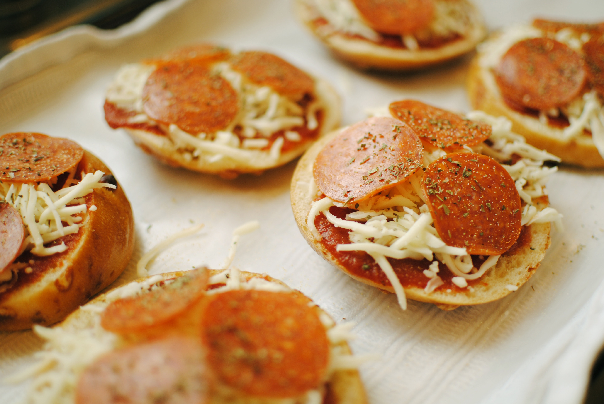
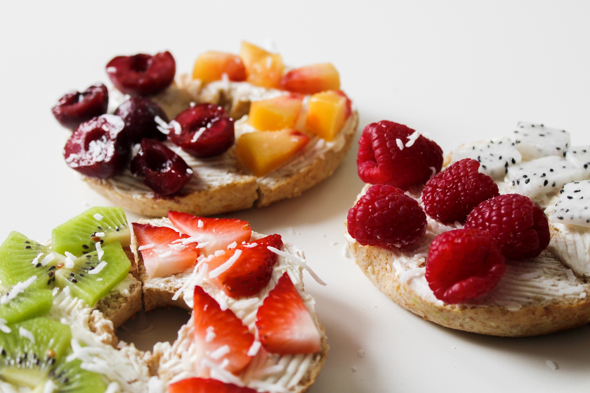
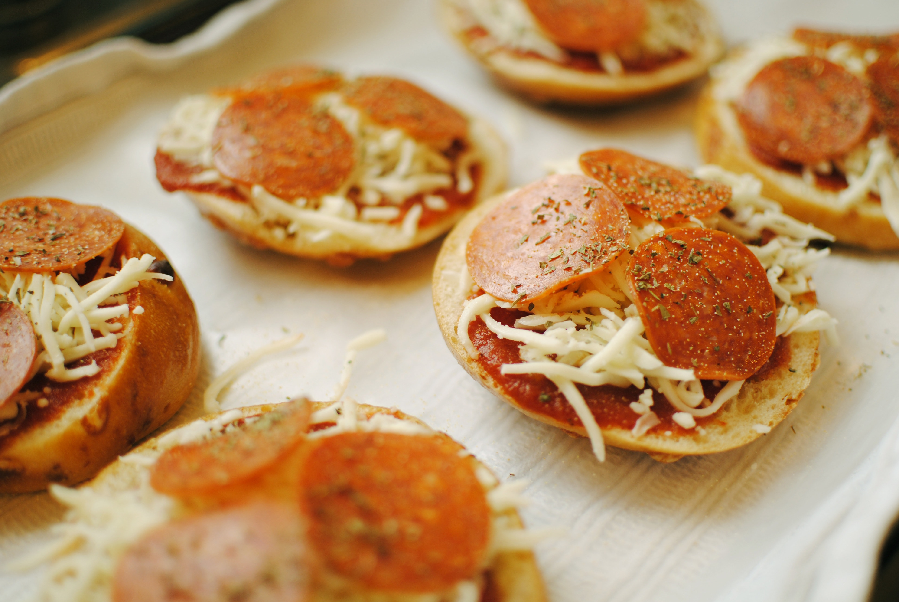
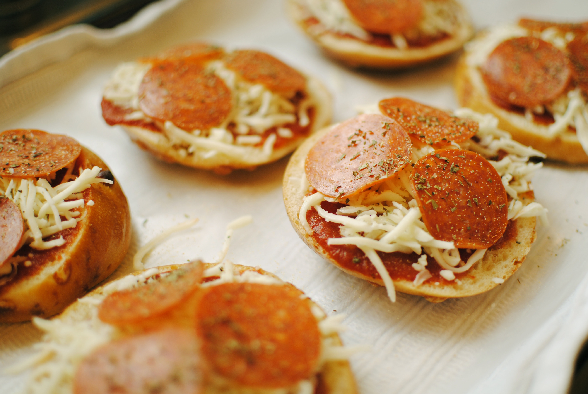
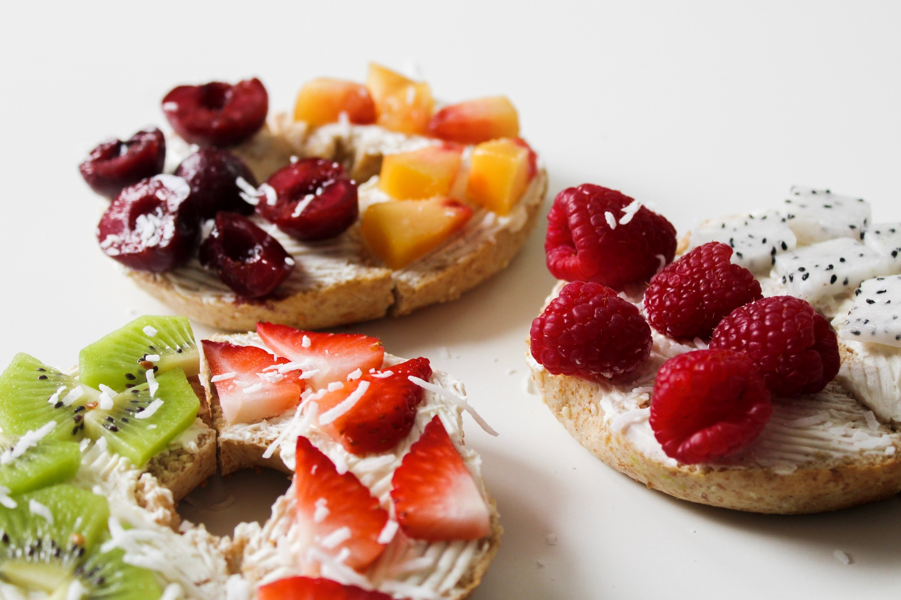
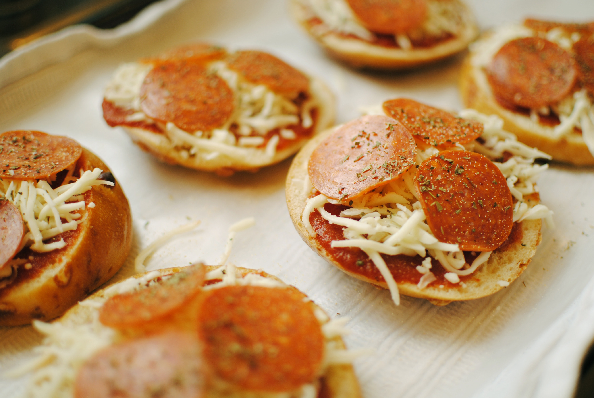
Locally owned and operated since 1995, we are dedicated to giving Harrisburg an amazing product using the traditional methods of water boiling and stone hearth baking.
The result is a bagel beyond compare with a perfect crust and a moist chewy center. Our bagels are made from scratch daily using the finest ingredients. We also make 11 varieties of delicious cream cheese spreads.
Continental Breakfast Options
include Bagel Platters with our Homemade Spreads, Pastry Platters, Coffee, Fruit and Juice 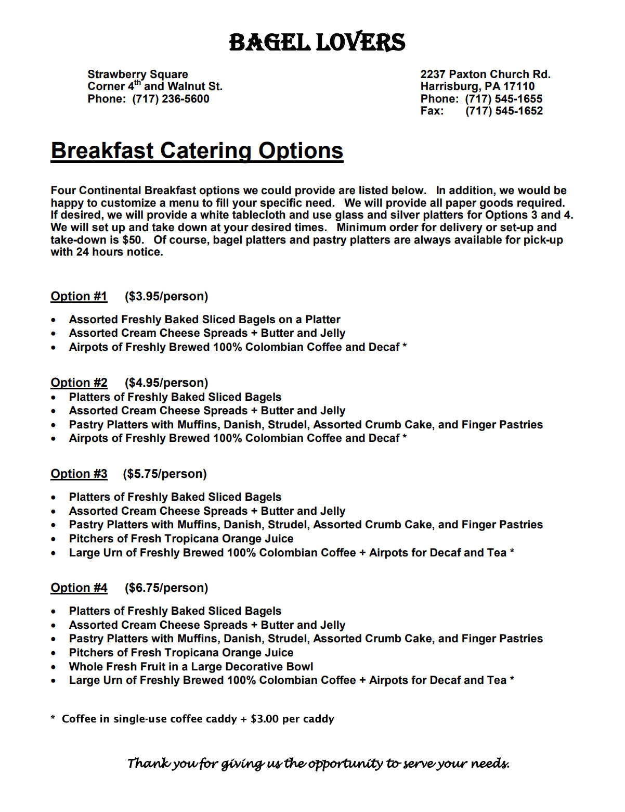
Lunch Catering Options
include Bagel Sandwich Platters, Wrap Platters, Giant Party Bagels and Deli Platters, Sides, and Dessert Platters 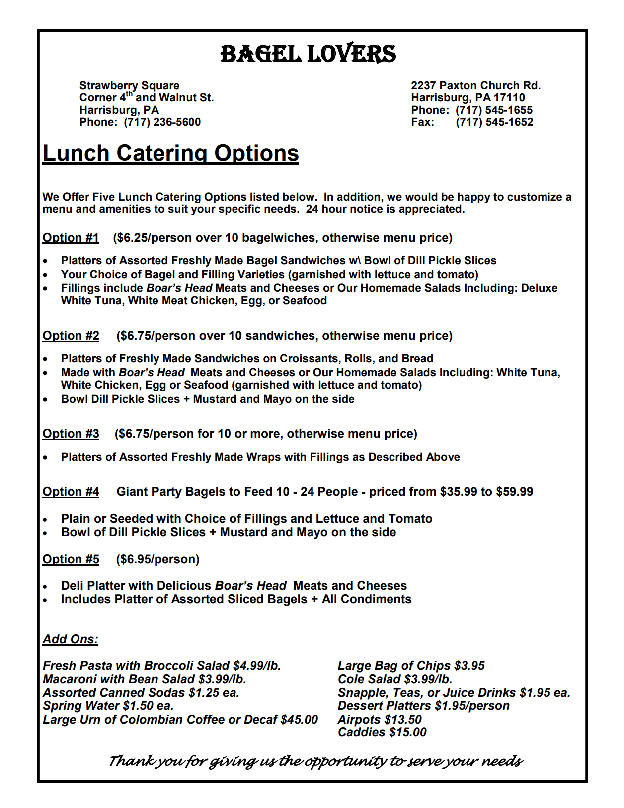Our bagels are made from scratch using only the finest ingredients. We kettle boil then stone hearth bake them. The crust is deliciously chewy and the inside light and fluffy.
Bagel Tips:
Our bagels are made without trans fats, high fructose corn syrup or preservatives. Also, most are cholesterol-free, except for minimal amounts in our egg, spinach and cheese bagels.
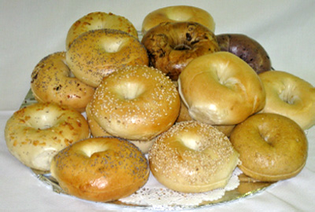Delivered Fresh Daily To Your Door
We offer daily delivery of fresh bagels, pastries and our home-made cream cheese spreads to establishments in and around the Harrisburg area.
With Special Wholesale Pricing